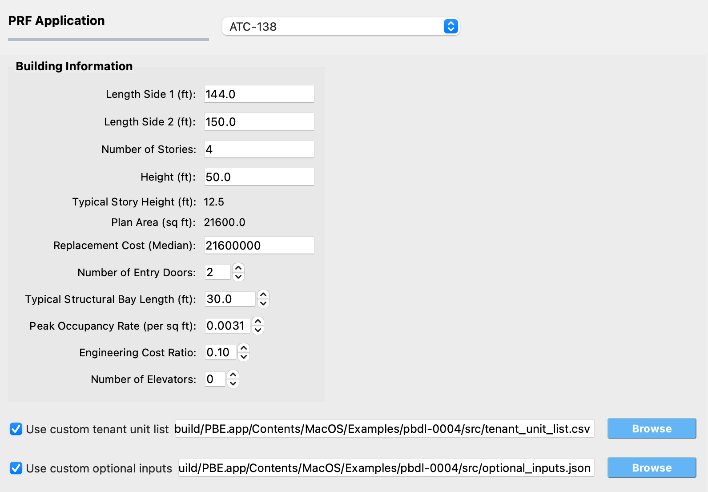

2.8.2. ATC-138¶
This panel collects the building-specific inputs needed by the ATC-138 functional recovery assessment. The inputs supplement the damage and loss results produced by Pelicun (under the DL tab) so the underlying engine can simulate the functional recovery process – including the delays imposed by inspection, financing, design, permitting, and contractor mobilization, the construction repair schedule, and the fault-tree evaluation of when each tenant unit and the building as a whole can be occupied again and regains full functional operation. After the analysis runs, the Results panel reports per-realization Reoccupancy, Functional Recovery, and Full Recovery times along with summary statistics.
The methodology is described in detail on the official ATC-138 Functional Recovery Methodology page. The Python implementation invoked by PBE lives at OpenPBEE/Functional-Recovery-Python. The example FEMA P-58 Assessment with ATC-138 Functional Recovery demonstrates the panel end-to-end and can be used as a starting template; it also ships ready-to-use template files for the custom tenant unit list and the custom optional inputs described below.

Fig. 2.8.2.1 The ATC-138 input panel.¶
The panel groups its inputs into the following areas:
2.8.2.1. Building Information¶
This area collects geometry and inventory information about the building, plus a few parameters that drive specific parts of the functional recovery assessment (egress, repair crew sizing, casualty modeling, engineering cost). Several of the fields are linked to the General Information (GI) panel and to the Loss tab of the DL panel – editing them here pushes the change back to those tabs and vice versa, so values stay consistent across the workflow.
You can work in any length unit you prefer in the GI panel. ATC-138 itself uses feet internally, so the linked values in this panel are always displayed in feet; PBE handles the conversion automatically.
The fields linked to the GI panel are:
- Length Side 1 (ft)
The length of one of the two principal building sides. Corresponds to Width in the GI panel.
- Length Side 2 (ft)
The length of the other principal building side. Corresponds to Depth in the GI panel.
- Number of Stories
The number of above-ground stories.
- Height (ft)
The total above-ground height of the building.
- Typical Story Height (ft)
Read-only. Computed automatically as
Height / Number of Storiesand updated whenever either source field changes. Used to size scaffolding for repair work along the building exterior.- Plan Area (sq ft)
Read-only. Computed automatically as
Length Side 1 x Length Side 2and updated whenever either source field changes. Used to size the construction workforce per story and to derive the total building occupancy from the peak occupancy rate.
The next field is linked to the Loss tab on the DL panel:
- Replacement Cost (Median)
The median replacement cost of the building. Used to scale repair-cost-driven impeding factors such as financing time and engineering design effort.
The remaining fields in this area are specific to the ATC-138 input panel:
- Number of Entry Doors
Total number of entry doors to the building. Used in the egress assessment – jammed entry doors after shaking can delay reoccupancy and function until temporary unjamming repairs are complete.
- Typical Structural Bay Length (ft)
Typical length of a structural bay. Used to size scaffolding and to allocate repair crews to the work area.
- Peak Occupancy Rate (per sq ft)
Peak building occupancy expressed as occupants per square foot of plan area. Used in the casualty and egress portions of the assessment. The default value (
0.0031) is representative of a commercial office building at peak occupancy.- Engineering Cost Ratio
Fraction of the total repair cost attributed to engineering and design effort. Used to derive design and re-design durations from the simulated repair cost. The default value (
0.10) represents a typical project where engineering and design account for 10 % of total project cost.- Number of Elevators
Total number of elevators in the building. If left at
0, the number of elevators is inferred automatically from the elevator components present in the asset model. Provide an explicit number if the asset model does not include elevator components but the building does have them, or if you want to override the inferred value.Note
Whether or not elevators are required for a tenant unit to be considered functional is determined separately, by the occupancy type assigned to that tenant unit (see below).
2.8.2.2. Optional Custom Inputs¶
ATC-138 ships with sensible defaults for every aspect of the assessment that the panel does not expose directly. The two checkboxes at the bottom of the panel let you override these defaults when needed. FEMA P-58 Assessment with ATC-138 Functional Recovery provides ready-to-use template files for both options.
Custom tenant unit list¶
When the Use custom tenant unit list checkbox is unchecked, PBE
auto-generates a default tenant_unit_list.csv in which each
story is one tenant unit assigned the full story plan area, a
perimeter area derived from the building edge lengths and story
height, and the Commercial Office occupancy type. This is
appropriate for a typical office building, but real assets often
have multiple tenants per story or use a different occupancy type.
To override the default, check the box and use the Browse button to point PBE at a CSV file with the following columns (one row per tenant unit):
- id
Unique tenant unit identifier (integer or string).
- story
Building story where the tenant unit is located. Ground floor is story
1.- area
Total plan area of the tenant unit, in square feet.
- perim_area
Total exterior perimeter (elevation) area of the tenant unit, in square feet.
- occupancy_id
Occupancy type identifier. ATC-138 currently supports the following four values; any other value will cause the assessment to fail:
0Non-Occupied Space
1Commercial Office
7Multi-Unit Residential
11Single-Unit Residential
The occupancy type drives which utilities, elevators, and subsystems must be operational for the tenant unit to be considered functional. The full list of functional requirements per occupancy type is in tenant_function_requirements.csv in the Functional-Recovery-Python repository.
Custom optional inputs¶
The assessment exposes a large number of secondary parameters covering impedance, repair scheduling, and functional recovery behavior. PBE uses the built-in defaults for all of them; if you need to change any, check the Use custom optional inputs box and point PBE at a JSON file. You only need to include the parameters you actually want to override – ATC-138 merges your file on top of the defaults at run time, so anything not specified keeps its default value.
The configurable parameter groups are:
- impedance_options
Controls the simulated delays before repairs can start – inspection, financing, engineering design, permitting, contractor mobilization, and procurement of long-lead items. Lets you designate the building as an essential facility, model an existing contractor relationship, or change the default lead time for materials.
- repair_time_options
Controls the construction phase of the schedule – maximum workforce density per story, building-level workforce caps, whether temporary repairs and shoring are allowed.
- functionality_options
Controls the fault-tree evaluation of reoccupancy and functional recovery – whether red tags are simulated, the egress threshold, utility and habitability requirements, the heat fuel type, and the flooding model.
The full list of parameters and their default values is documented in default_inputs.json in the Functional-Recovery-Python repository.
Note
If you need to change one of the static lookup tables ATC-138
uses internally (such as component_attributes.csv or
tenant_function_requirements.csv), you can place a modified
copy of the file directly in the project directory and ATC-138
will prefer it over the built-in default. PBE does not
currently expose that workflow through the UI – the file has
to be copied into the project directory manually.